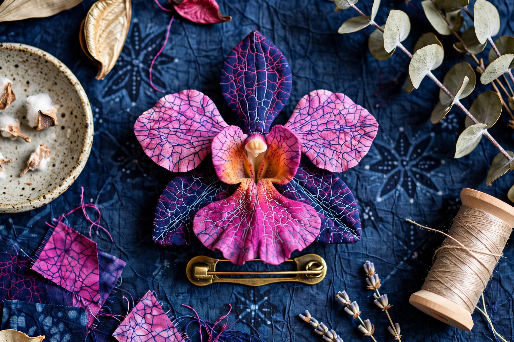
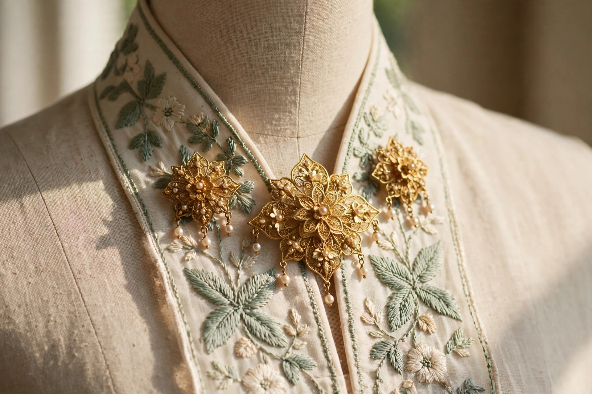
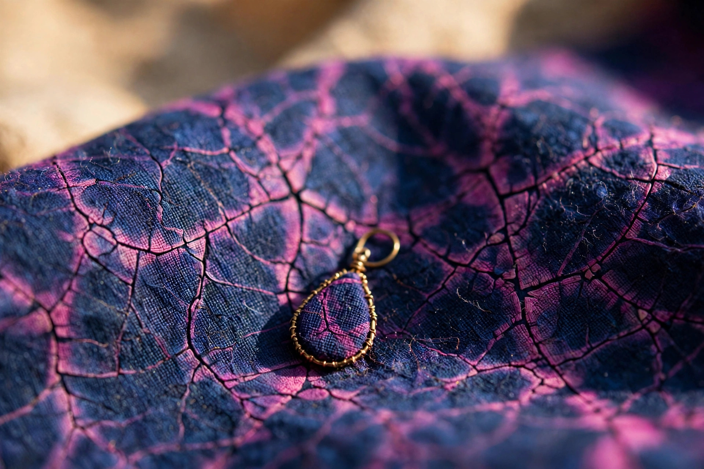
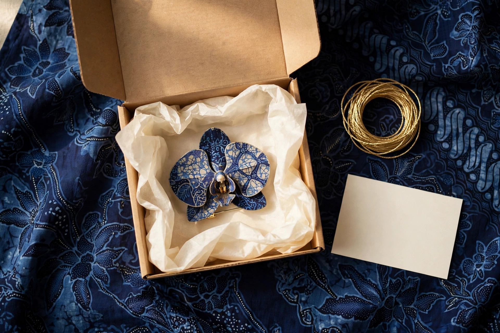
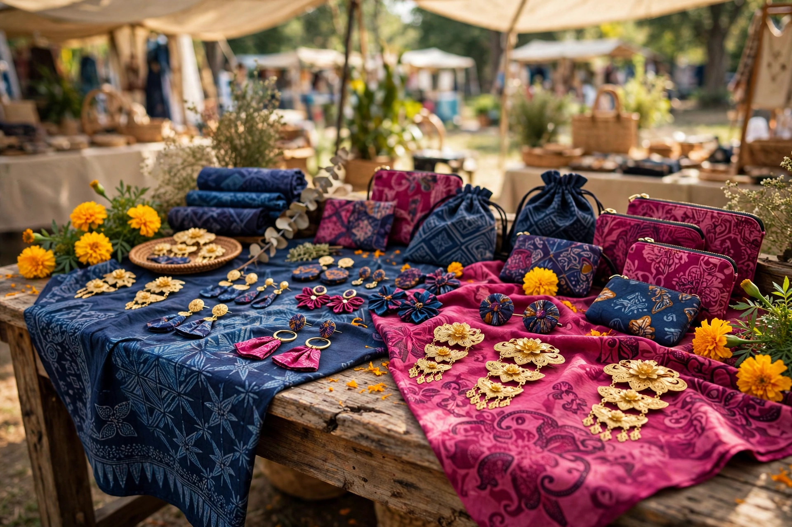

Preview before you book a studio
Direction samples are agreed first, so any real studio time is spent shooting a look Serena has already signed off — not discovering it on the day.
No studio booked to previewDirectional pitch · Concept suite · Curated for Serena Wong
Editorial quality in Batik Sayang’s signature aesthetic — shot briefs and AI concept samples ready for Serena’s review. Five shots, one visual language.
Production transparency protocol
These are direction samples in Batik Sayang’s style — your real pieces, shot for real once you approve. Every image on this page is AI-generated and labelled as such. No sample here is a photograph of a real Batik Sayang piece.
Scope phase: pre-visual.

Heritage icon series · NDP 2026 collection star
Brief: Vanda Miss Joaquim hero brooch angled on textured deep indigo batik cloth, surrounded by natural studio props. Serena’s focus: floral petal folds & brass setting pin. High editorial.

Lifestyle provenance · Festive & daily wear
Brief: delicate traditional kerongsang pinned against an embroidered cream and sage kebaya collar. Warm daylight, collared drape.

Tactile verification · 1–5 hour craft time
Brief: extreme macro of the artisanal wax crackle dye lines of authentic batik canting fabric, with a batik earring. Canting relief.

Unboxing experience · Corporate & patron gift
Brief: signature unboxing — brooch nestled in crisp wax tissue paper, hand-tied gold twine, a blank card for a handwritten note. Calligraphy touch.

Retail market energy · Full suite range
Brief: warm wooden artisan market display table featuring the complete collection — brooches, dokoh, earrings and more. Pop-up simulation.
Operational strategy
Traditional studio productions drain precious atelier hours. This workflow lets Serena preview the look — and approve it — before a single real shoot is booked.
Direction samples are agreed first, so any real studio time is spent shooting a look Serena has already signed off — not discovering it on the day.
No studio booked to previewFor limited batches of around 50 pieces, concept shoots keep pace with the drop cycle instead of holding it up while photography is arranged.
Built for ~50-piece batchesBatik requires precise colour fidelity, so indigo doesn’t read as murky black and fuchsia doesn’t clip. The five shots share one calibrated palette.
Calibrated tone